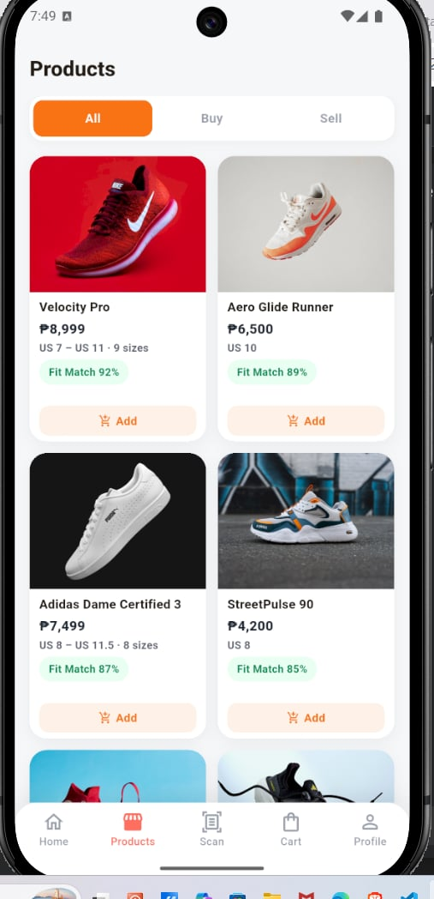
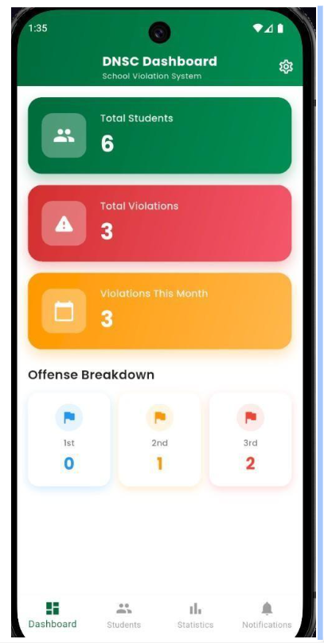
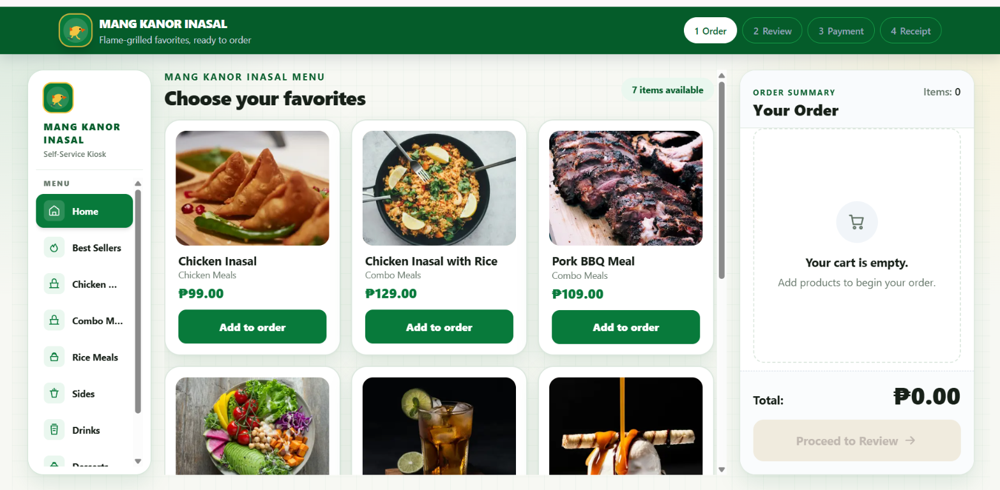
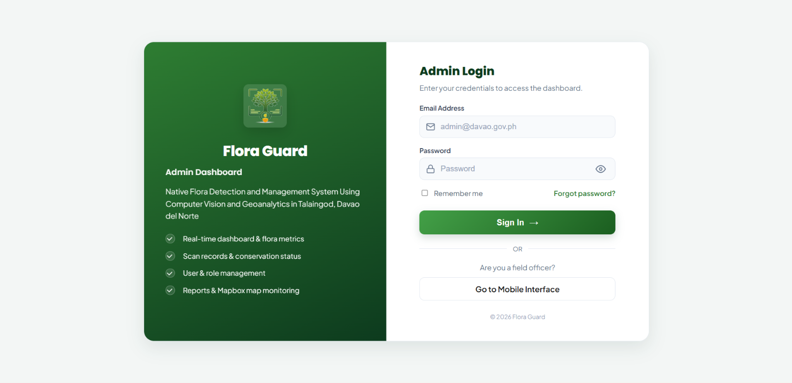

Mobile App Pitching — School Activity
- Conducted research to support the development and presentation of a mobile application idea.
- Participated in presenting a proposed mobile app solution.
Personal CV · Davao del Norte, Philippines
Aspiring AI Developer
Learning to turn thoughtful prompts, practical code, and emerging AI tools into useful solutions.
Currently a 4th Year BSIT Student at Davao del Norte State College, building a foundation in web, mobile, and AI-focused development.
I am an aspiring AI developer with an interest in prompt engineering and the effective use of AI tools.
I am developing my technical skills while learning to write clear prompts, solve problems, and explore AI technologies. My goal is to use AI to create useful, efficient, and innovative solutions.
2023 — Present
Bachelor of Science in Information Technology (BSIT)

A mobile application that helps users find and manage shoe recommendations based on their preferences and needs.
Technologies Flutter · Dart · Firebase
View repository
A system for recording, tracking, and managing student violations efficiently.
Technologies Flutter · Dart · Supabase

Developed for the IT415 Practical Examination, this touchscreen self-service POS kiosk supports an interactive ordering experience.
Technologies Next.js App Router · React · TypeScript · Tailwind CSS · JSON file storage
View repository
A capstone project using computer vision, GPS, geoanalytics, and cloud-based data management to help identify, document, map, and monitor selected native flora species in Talaingod, Davao del Norte.
Technologies Flutter · Dart · PHP · Firebase Authentication
View repositoryHave a question or an opportunity to discuss?
I’m open to connecting and continuing to learn through meaningful conversations and projects.
LocationTubod, Carmen, Davao del Norte, Philippines